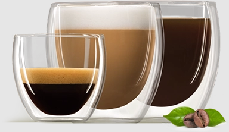
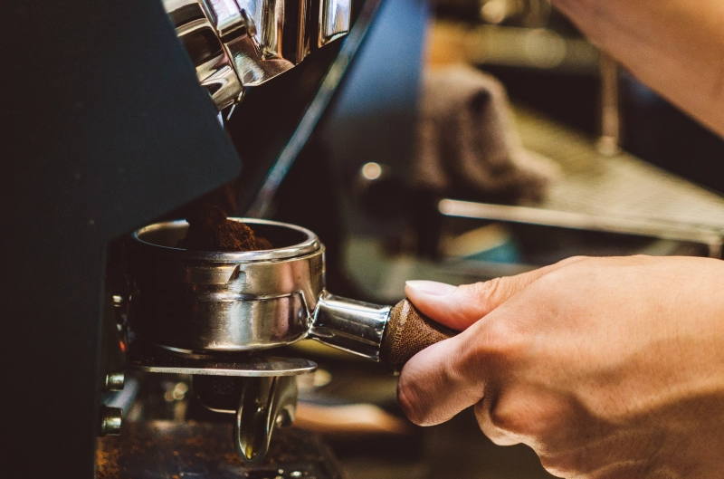
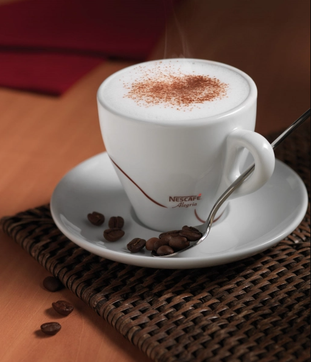
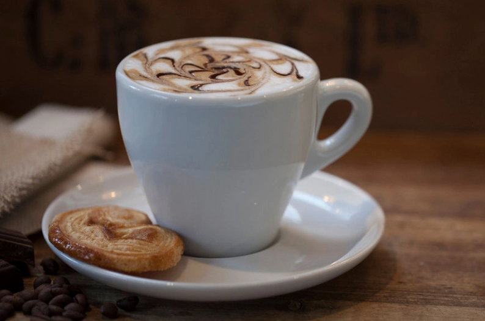

УНИКАЛЬНЫЕ И МАЛОИЗВЕСТНЫЕ ФАКТЫ О КОФЕ, КОТОРЫЕ НАДО ЗНАТЬ ОФИСНОМУ СОТРУДНИКУ
КОГДА ВПЕРВЫЕ ПОПРОБОВАЛИ КОФЕ?
Считается, что эфиопы открыли тонизирующие свойства кофе в 850 году н.э. Но о том, как правильно его
использовать, чтобы наслаждаться вкусом, догадались не сразу:
Первое время употребляли только ягоды.
Чуть позже начали готовить напиток из сырой мякоти.
И только в XII веке появился рецепт с кофейными зернами. Правда, сырыми.
Прошло еще столетие, и процесс приготовления кофе стал напоминать современный: зерна предварительно сушили,
обжаривали и измельчали, заливали водой, кипятили и настаивали.
Процесс мог занимать до нескольких часов. Хорошо, что сегодня автоматические кофемашины готовят напиток
буквально
за мгновение.

Кофе — настоящий источник энергии в вашей чашке. А еще это прекрасная возможность ненадолго отвлечься от
рабочих
проблем, чтобы вернуться к ним со свежими решениями. Мы подготовили интересные факты о любимом напитке,
чтобы у
вас с коллегами было больше тем для разговоров, не касающихся работы.

НЕОБЫЧНЫЕ ИСТОРИЧЕСКИЕ ФАКТЫ О КОФЕЙНЯХ
Первая кофейня появилась в Стамбуле около 5 веков назад. Она сразу заработала репутацию места, где
собираются
недовольные властью.
А в 1675 по этой причине английский король Карл II попытался запретить посещение кофеен. Его поддержали
женщины, недовольные тем, что семейным обязанностям их мужья предпочитают встречи за чашкой кофе. Но
указ,
вызвавший массу негодований, так и не был реализован.
«Флориан» — самая старая кофейня Италии, расположенная в Венеции на Площади Сан Марко. Открытая в 1720
году,
она работает до сих пор.
СРЕДНИЙ ВОЗРАСТ БАРИСТА В ИТАЛИИ
45 лет! Эта профессия считается очень уважаемой. Ведь для итальянцев приготовление кофе — настоящее искусство.
Но даже не обладая специальными навыками, потрясающий кофе можно приготовить с помощью автоматической
кофемашины.
Так, профессиональное устройство заменит бариста в офисе.
КТО ПРИДУМАЛ РАСТВОРИМЫЙ КОФЕ?
Попытки ускорить процесс приготовления кофе предпринимались еще в XIX веке. Изначально изобретатели бились над
этой задачей по заказу армии. Кофе в плитках предшествовал гранулированному. А знакомый нам растворимый напиток
в
гранулах появился в 1906 году. Изобретение принадлежит тезке первого президента США Джорджа Вашингтона —
американскому изобретателю английского происхождения Джорджу Константу Вашингтону.

Nescafé® стала первой широко известной маркой растворимого кофе. Появившись в 1938 году, она помогла решить
сразу 2 проблемы:
Перед бразильским правительством больше не стоял вопрос, что делать с излишками кофе.
А для приготовления напитка теперь не требовалось много времени и усилий.
В основе качественного сублимированного кофе — концентрат из натуральных свежемолотых и обжаренных кофейных
зерен, который высушивают особым образом, получая аккуратные гранулы. В гранулах отлично сохраняются
полезные вещества и вкус кофейных зерен.
ПОЧЕМУ КОФЕИН ЗАПРЕЩЕН ДЛЯ УЧАСТНИКОВ ОЛИМПИЙСКИХ ИГР?
Европейские монархи пытались закрыть кофейни, чтобы избежать заговоров. Международный олимпийский комитет
запретил
избыточное употребление кофеина по другой причине: вещество, повышающее энергию и выносливость, считается
допингом. Так, спортсмена могут дисквалифицировать, если перед соревнованиями он выпил около 5 чашек крепкого
кофе.
А ЧТО ЖЕ ТАКОЕ КОФЕИН?
Какао, чайное и кофейное деревья вырабатывают особое вещество для защиты от вредных насекомых и привлечения
опылителей. Это и есть кофеин, который мы так ценим за бодрящий эффект.
САМЫЕ ПОПУЛЯРНЫЕ СОРТА КОФЕ
Арабика и робуста — названия сортов кофе, знакомые даже тем, кто предпочитает чай. В мировом кофейном
производстве эти сорта существуют в соотношении примерно 70 на 30%.
Арабика содержит большое количество эфирных масел и отличается богатством аромата. Зато робуста порадует
любителей крепкого кофе с горчинкой, так как в ней больше кофеина. Часто производители достигают гармонии
вкуса, смешивая разные сорта в определенных пропорциях.
КОПИ-ЛЮВАК — САМЫЙ ДОРОГОЙ СОРТ КОФЕ
1 килограмм стоит около 700 долларов. Производят такой кофе в Индонезии, Индии, Вьетнаме и на Филиппинах, где
обитают небольшие зверьки — мусанги. Именно они играют главную роль в производстве.
Как это происходит? Мусанги съедают кофейные ягоды, переваривают мякоть и испражняют зернышки. Затем фермеры
собирают, моют и сушат их. Считается, что уникальный вкус кофе приобретает за счет того, что желудочный сок
расщепляет белок в составе зерен, из-за которого напиток может горчить.
ПОЧЕМУ КОФЕЙНЫЕ ЯГОДЫ СОБИРАЮТ ВРУЧНУЮ?
Кофейное дерево с красивыми ветками, усыпанными красными ягодами… Не обязательно лететь в Бразилию или
Колумбию, чтобы представить себе эту картину.

Ручной сбор ягод — лучший способ сразу отсортировать испорченные или недозрелые плоды, отобрав самые спелые и
качественные. Именно такие — основа первоклассного кофе.
Собирают ягоды специально обученные люди. 7 корзин или примерно 700 кг кофейных бобов ежедневно — средний
результат работы опытного сборщика.
В ЧЕМ СЕКРЕТ АРОМАТА КОФЕ?
Кофе невероятно многогранен — ведь он содержит почти 800 ароматических соединений. Какая грань вкуса
раскроется в вашей чашке, во многом зависит от обжарки:
Чем она сильнее, тем более глубоким и насыщенным будет аромат напитка.
При слабой обжарке кофейные зерна сохраняют больше кофеина и горчинку. А кофе получается более мягким.
COFFEE DAY: КАК И КОГДА ПРАЗДНУЮТ ДЕНЬ КОФЕ В РАЗНЫХ СТРАНАХ
По некоторым данным, ежедневно в мире выпивают более 2 миллионов чашек кофе. И разве можно не посвятить
отдельный
праздник столь популярному напитку? Международным днем кофе считается 1 октября. Но в разных странах существуют
и
другие праздничные даты:
В Италии — 17 апреля. Если быть точнее, это день эспрессо. И бариста традиционно предлагают любимый напиток
по сниженным ценам, а также раздают буклеты с рецептами.
В Швейцарии — 16 мая. Отличный повод заглянуть в кофейню, где предлагают попробовать оригинальные кофейные
напитки.
В Бразилии — 24 мая. В стране карнавалов и день кофе отмечают соответствующим образом.
В Колумбии — 27 июня. Кофе — основной источник доходов колумбийцев. Поэтому праздник здесь отмечают с
размахом: парадом машин, груженных мешками с кофейными зернами, концертом, дегустацией.
США — 29 сентября. Шоу программы, дегустации лучшего кофе — так свою любовь к напитку проявляют американцы.